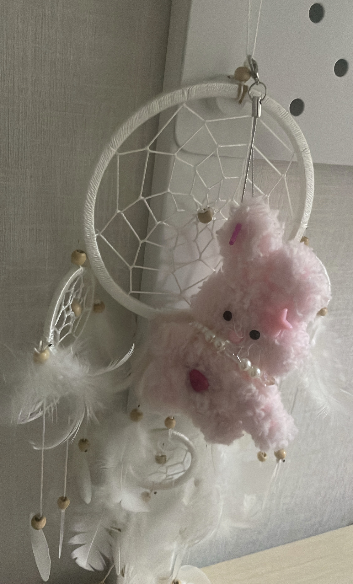

화분
카페 가는 계단 창문 앞에 걸려 있던 화분이다. 단순한 모양의 화분과 특이하게 생긴 식물의 조화가 예쁘다. 그리고 창문, 화분, 식물의 각각 다른 채도의 초록색이 함께 있으니 더 매력적으로 보인다. 요즘에는 이런 간단한 디자인에 관심이 있다. 적은 요소로 큰 눈길을 끄는 디자인이라는 점에서 대단하다.
키티 마우스
학교에서 쓰는 나의 마우스이다. 다른 마우스들과 다르게 뚜껑을 접었다 폈다 하며 폴더 형식으로 사용할 수 있는 마우스이다. 펼치면 마우스와 뚜껑에 공간이 생겨서 처음에는 불편할 것 같아 걱정했는데 써 보니 그런 불편함은 없다. 마우스 제품 자체가 여닫을 수 있는 신기한 디자인이다.
드림 캐쳐
드림캐쳐는 중학교 때 친구가 생일 선물로 준 것이고, 모루 인형은 고3 때 친구가 선물로 준 것이다. 드림캐쳐의 하얀색 깃털과 나무색 구슬의 조화가 좋고 적절한 모양으로 짜인 실의 조화가 디자인적으로 마음에 들었다. 모루 인형과 함께 있을 때 더 예뻐 보여서 함께 걸어 두었다.
카페 진동벨
비둘기는 멍청해 보여라는 카페를 갔을 때 진동벨의 디자인이 재미있었다. 비둘기를 웃기게 그려서 카페의 상징을 잘 살렸고 하찮은 느낌으로 계속 생각에 남을 디자인이라서 좋았다. 나도 이런 디자인을 해 보고 싶다.
촛불 모양 무드등
고등학교 수능 서원식 때 받은 촛불 모양 등이다. 왕관 모양의 유리 안에 촛불이 있는데 어두운 곳에서 보면 유리에 있는 질감이 그대로 비쳐서 예쁘다. 유리에 새겨진 꽃 모양과 전체적인 오묘한 분위기가 잘 어울린다. 빛에 비칠 것까지 예상한 섬세한 디자인이라서 인상 깊었다.
젤리
편의점에서 본 젤리 봉투이다. 아이들을 겨냥한 상품인 만큼 아이들이 좋아하는 캐릭터가 그려져 있다. 그리고 주변에 내용물 젤리를 넣음으로써 젤리가 더 먹고 싶어지는 효과를 만들어 냈다. 어지럽고 다채로운 색이라 더 눈에 띈다. 먹어 봤는데 맛있었다.
공중 전화기 부스에 붙은 스티커
공중전화 부스에 붙여져 있는 스티커이다. 아이 같은 글씨체와 그림으로 친근함을 느끼게 해 준다. 같은 자리에 있을 테니 필요할 때 찾아오라는 글이 쓰여 있는데, 감동적이기도 하고 귀엽기도 해서 지나갈 때마다 스티커를 보면서 지나가곤 한다. 좋은 디자인이다.
버스 광고
버스를 타고 가는데 내가 다녔던 학원의 광고가 붙어져 있어서 보게 되었다. 그렇게 큰 디자인적인 요소가 있는 건 아니지만, 색깔이 빨간색이라서 더 눈에 띈다. 역시 눈에 띄려면 색이 중요하다는 것을 한 번 더 깨닫게 되었다. 나도 디자인을 할 때 적절한 색을 골라서 해야겠다.
카페 메뉴판
카페 메뉴판이다. 밝은 색감이 인상적이었고 대비 되게 검은색 진한 글씨로 꾸민 메뉴판이 간단하면서도 한 번에 눈에 잘 들어와서 좋다. 색깔이 예뻐서 보기 좋은 디자인이다. 필기체 영어가 포인트가 되어서 예쁘다. 이런 디자인을 하고 싶다.
앨범 표지
서로 다른 버전의 앨범 다섯 개가 놓여 있다. 앨범에 지도가 그려져 있는데 다섯 개의 앨범이 모두 이어진다. 앨범의 컨셉이 항해인데, 지도가 크게 이어지는 것과 나침반이 그려져 있는 것이 굉장히 좋은 생각이다. 색도 잘 맞는 조합으로 만들어서 보기 좋다.